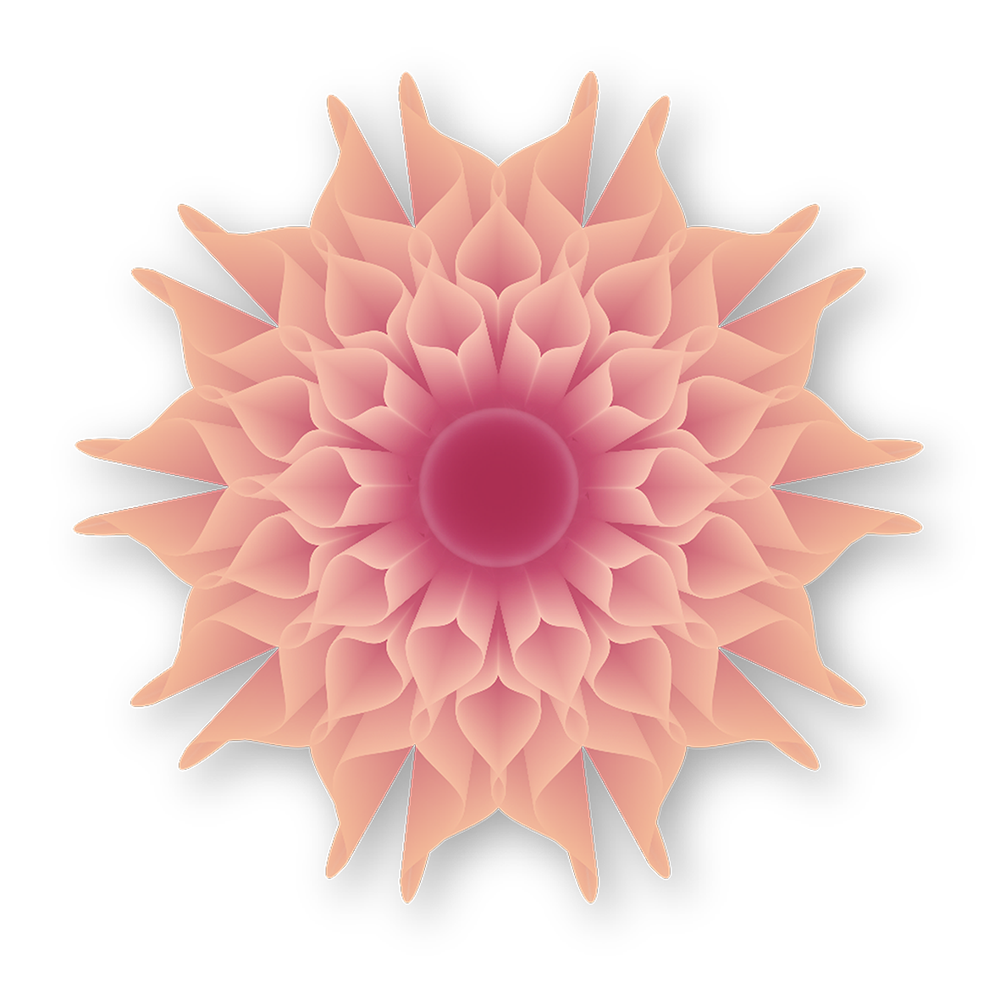

Illustrasjon
Vektorgrafikk i Adobe Illustrator
Hobbyprosjekt, høst 2019
Blomst
For å bedre beherske programmet Adobe Illustrator, fulgte jeg høsten 2019 flere ulike tutorials på YouTube. Blomsten under ble laget med utgangspunkt i en slik tutorial.

Figur: Illustrasjon laget i Adobe Illustrator.